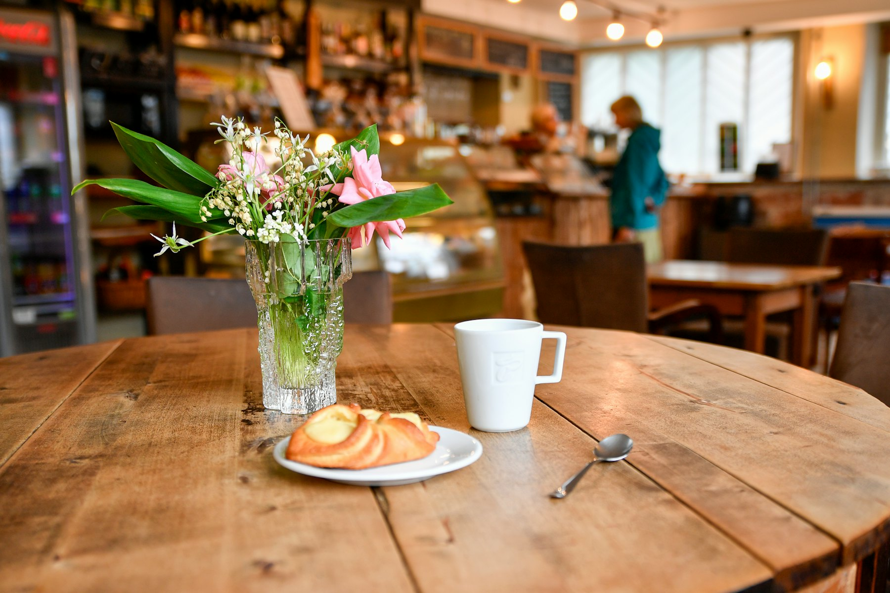

ほけんだよりThe Nurse's Office News
発行：ちょこっとほけんしつ café chiffonFrom café chiffon, Oyama
看護師さんのいる、
まちのほけんしつカフェ。A neighborhood café
with a nurse's office inside.
医療者ママたちがつくったカフェです。焼きたてピザやパスタ、ケーキでひと休みしながら、血圧測定や健康・育児のご相談もどうぞ。小上がり席と遊具があるので、お子さま連れでもゆっくり過ごせます。A café started by mothers who work in healthcare. Have pizza, pasta or cake — and check your blood pressure or ask about health and parenting while you're here. With a raised seating area and indoor play equipment, kids are welcome too.

きょうのご用件Today's visit
どんなご用で
いらっしゃいますか？What brings
you in today?
どなたでもEveryone welcome
地域の方が、気軽に立ち寄れる場所に。A place anyone in the neighborhood can drop into.
お子さま連れFamilies
小上がり席と、うんてい・ブランコ・すべり台。Raised seating plus monkey bars, a swing and a slide.
通院のあいまにBetween appointments
日大病院から徒歩5分。診察の待ち時間や通院帰りのひと休みに。Five minutes from Nihon University Hospital — for waiting time or after a visit.
お仕事・学生さんもWorkers & students
高齢の方も学生さんも、お仕事合間のランチも大歓迎。Seniors, students and working lunches all welcome.
アクセスVisit
大山西町・日大病院入口交差点そばNear the Nihon University Hospital entrance
- 住所Address
- 〒173-0033 東京都板橋区大山西町58-13 ハイツ大山101Heights Oyama 101, 58-13 Oyama-nishicho, Itabashi, Tokyo 173-0033
- 火〜金Tue–Fri
- 10:00–16:00
- 土Sat
- 9:00–15:00
- 定休日Closed
- 日・月Sun & Mon
- TEL
- 090-3430-7555
- chokotto.hokenshitsu@gmail.com
- @chiffon8562
Googleマップ ★4.9Google Maps ★4.9